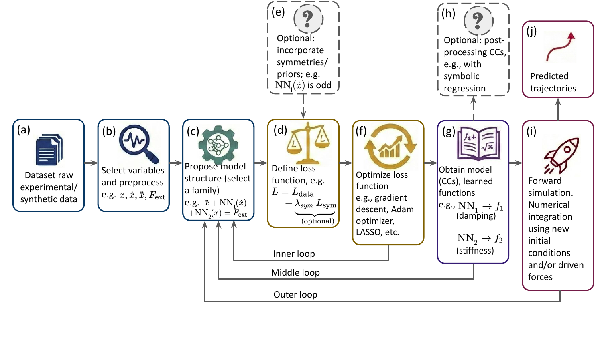
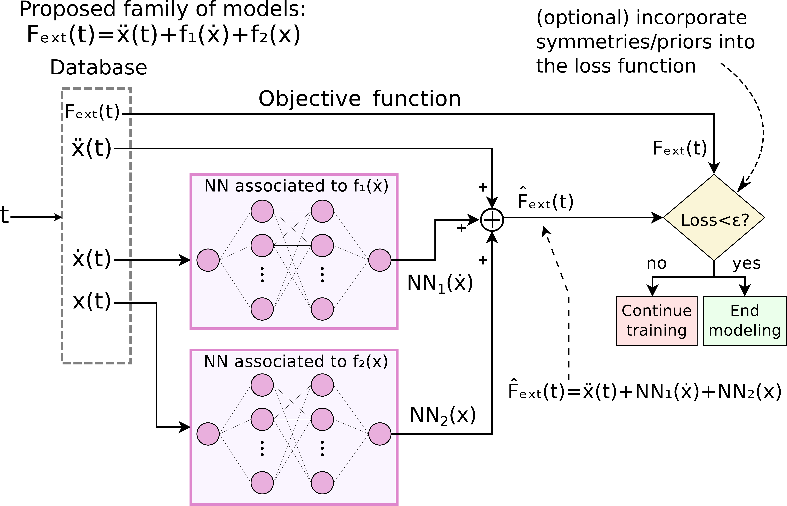

✏️ pyCC
pyCC is a user-friendly Python library for data-driven equation discovery, designed to bridge the gap between “black-box” and “white-box” modeling paradigms, while facilitating practical applications in science and engineering.
The workflow of this library is designed to mirror the standard scientific process of hypothesis testing and validation. By using standard Python syntax, practitioners can define, test, and refine hypothesized model structures in a modular way that aligns with how research is conducted in practice. The library provides high-level abstractions that automatically manage the underlying optimization and backpropagation processes, enabling users to focus on validating their hypotheses and interpreting the results.
The core strength of pyCC lies in its identifiability, physical consistency, and interpretability. Its transparent and modular architecture allows practitioners to benefit from powerful approximation tools the power of universal approximators, such as Neural Networks, within a structured framework specifically tailored for reliable system identification (for more details, please refer to arXiv:2601.21720).
🎯 Why pyCC
i) Identifiability
When inferring dynamical equations from real experiments (often with finite sampling or noisy data) multiple distinct mathematical models can fit the observations with comparable accuracy. This leads to ambiguity in model selection, also referred to as the identifiability challenge. This issue is intrinsically connected to the ill-posed nature of the inverse problem.
pyCC addresses this issue by injecting prior physical knowledge or hypotheses into the discovery process by defining a structural ‘skeleton’.
The choice of the structural skeleton directly affects identifiability: some equation forms admit unique decompositions, whereas others may lead to non-identifiable or ambiguous representations. When the hypothetized model structure possess uniqueness properties, pyCC provides a formal framework to assess whether the proposed equation is consistent with the data. This enables the rigorous validation or elimination of hypothesized models, thereby shedding light to the identifiability challenge.
ii) Physical consistency
To define physically motivated model structures, the formalism of Characteristic Curves (CCs) is ideal.
This formalism is based on a decomposition of high-dimensional, multivalued dynamics into modular, univariate functions referred to as CCs. In this view, each CC represents a constitutive relation of an independent physical element (e.g., a specific spring or a specific damper).
By enforcing this decomposition, we define model structures that, apart from having uniqueness properties, yield functions that possess inherent physical meaning. This assures physical consistency: the learned model is not just a curve fit, but a collection of distinct physical mechanisms.
iii) Interpretability
The use of CCs allows the practitioner to ‘visualize’ the model simply by plotting the univariate curves. This offers a visual tool that significantly enhances interpretability. This has a simple but profound implication: the objective shifts from finding precise parameter values that represent the CCs to finding the shape of the functions themselves.
Traditional approach: “Find the coefficients \(k\) and \(c\) assuming linear dynamics.”
pyCC approach: “Find the shapes of the stiffness and damping curves.”
If the stiffness curve comes out looking like a line, we know the system is linear. If it looks like a parabola, we know it is nonlinear. This visual insight allows for qualitative discovery before quantitative fitting.
iv) Modularity, Universality and Transparency
Since pyCC prioritizes the shape of the constitutive relations over their specific model coefficients, the specific parametric form of the curves (e.g., whether they are polynomial, exponential, or trigonometric) does not need to be postulated a priori. This flexibility unlocks a highly modular approach that can be implemented using different modeling paradigms.
For example, we can parameterize the CCs using universal approximators, such as Neural Networks (NNs). This approach (refered to as NN-CC) is powerful because it allows the discovery of physical laws without bias: the model can adapt to any continuous shape and also discontinouous?, regardless of its complexity, provided that … enough layers neurons?
Crucially, this approach maintains transparency. While NNs are often regarded as opaque “black boxes” in high-dimensional tasks, within pyCC they are restricted to learning univariate functions. A “black box” with a single input and single output is effectively transparent: it is simply a curve that can be plotted and visually inspected to interpret the underlying physics.
Note
The Core Philosophy: Instead of asking “What is the global equation?”, pyCC asks “Given this physical structure (e.g., a damped oscillator), what are the specific shapes of the stiffness and damping curves?” These curves are the constitutive relations of the system; once they are identified, the identification problem is effectively solved.
💡 The pyCC approach: A schematic workflow
pyCC frames discovery as a hypothesis-testing loop. The practitioner proposes a structure (e.g., “Is this a friction-based oscillator?”), and the library determines the optimal shapes of the internal functions in order to decide if the hypothetized structure is coherent with the data or should be modified.
{kind=link}

Figure 1: The pyCC workflow. (a-c) A hypothesized model structure is proposed. (d-f) A representation for the CCs is selected (via NN, SymbReg, etc.), and optional constraints are defined to be minimized jointly with the data loss term. (g-j) The resulting curves are inspected for physical validity and forward simulations are performed with the obtained models. Adapted from arXiv:2601.21720
The workflow proceeds in three main stages:
- 1. Hypothesis & Setup (a-c)
The process begins with raw experimental or synthetic data (a). The practitioner selects the relevant state variables (e.g., position \(x\), velocity \(\dot{x}\), and external force \(F_{ext}\)) (b). Crucially, instead of assuming a “black box,” a Structural Skeleton is proposed (c). For example, one might hypothesize a second-order oscillator structure: \(\ddot{x} + f_1(\dot{x}) + f_2(x) = F_{ext}(t)\).
- 2. Physics-Informed Optimization (d-f)
The library constructs a loss function (d) to fit the data. An important feature of pyCC is the ability to inject prior physical knowledge or hypotheses (e) directly into this stage.
Example: If you hypothesize that the friction curve should be symmetric, you can enforce this constraint—for example, by stating that \(f_1(\dot{x})\) must be an odd function.
The optimizer (f) (e.g., Adam/AdamW for Neural Networks) finds the functions that best satisfy both the data and these physical constraints.
Inner Loop: If the obtained loss function after optimization is not sufficiently small, it suggests the hypothesized structural skeleton cannot capture the physics. The workflow returns to (c) to propose a different model family.
- 3. Discovery & Validation (g-j)
The output is not just a prediction, but the CCs themselves (g).
Interpretability & The Middle Loop: You can plot the CCs to visually inspect the physics. For instance, for the second-order example mentioned above, \(f_1\) represents a damping force and \(f_2\) a stiffness force.
Consistency Check: If the learned CCs look unphysical or vary significantly across different datasets (lack of invariance), the hypothesis is rejected. This triggers the Middle Loop, returning to model selection (c).
Post-Processing (h): Optionally, these CCs can be fed into a Symbolic Regression tool to recover analytical equations (e.g., finding that \(f_2(x) \approx kx + \beta x^3\)). pyCC provides a built-in interface that calls PySR code to perform this translation automatically.
Validation (i-j): Validation extends beyond verifying the shape of the CCs; the final rigorous test is provided by forward simulations. The model is tested against new initial conditions or external forces to ensure it generalizes to unseen data or unexplored regions of the phase space. If these simulations fail to adequately reproduce the system dynamics, the process returns to the model selection stage (c) (via the Outer Loop) to revise the structural hypothesis and/or constraints.
🔬 Application example to a second order system
To illustrate the application of the workflow, consider the task of identifying a second-order with a velocity-dependent friction force and external driving force. The practitioner starts by hypothesizing a second-order structural skeleton:
This equation implies that the system is governed by two CCs: i) A damping force \(f_1\) that depends solely on velocity. ii) A restoring force \(f_2\) that depends solely on position.
Figure 2 illustrates how this hypothesis is translated into the pyCC internal architecture. In this example, we parameterize the CCs as Neural Networks (thus the method is referred to as NN-CC), but other parameterizations are available.
The package handles the structural implementation automatically, allowing the practitioner to focus solely on defining the hypothesized equation (see Usage tab).
{kind=link}

Figure 2: The architecture for a second-order system. Two independent neural networks (\(\text{NN}_1\) and\(\text{NN}_2\) ) approximate the unknown CCs.\(\,\text{NN}_1\) sees only velocity, and\(\,\text{NN}_2\) sees only position. Their outputs are summed to match the hypothetized structure.
The internal architecture can be basically characterized by:
A dedicated estimator ( \(\text{NN}_1\) ) receives only the velocity \(\dot{x}\) to learn the shape of \(f_1\).
A dedicted estimator ( \(\text{NN}_2\) ) receives only the position \(x\) to learn the shape of \(f_2\).
Why this architecture matters:
Crucially, this architecture enforces the properties of uniqueness, interpretability, and physical consistency mentioned above. This guarantees that, upon convergence, the solution is unique: \(\text{NN}_1\) effectively converges to \(f_1\) and \(\text{NN}_2\) to \(f_2\), avoiding any ambiguity in the identification of the functions, as discussed in arXiv:2601.21720.
📝 Formalism
Equation discovery (which can be considered as a subfield of system identification) is the process of finding the underlying governing equations of a system from observational data. A wide variety of systems (ranging form physical and engeneering to biological, chemical, economic and social), the dynamics can be described by a set of first-order ordinary differential equations (ODEs):
where \(\mathbf{x}=\mathbf{x}(t)\) is the state vector containing the dynamical variables (e.g., position, velocity). The explicit time-dependence can always be considered as external driving forces \(\mathbf{F}_{ext}(t)\) , giving the equation:
Identifying the global function \(\mathbf{F}\) directly often results in “black-box” models that often lack physical insight and lead to ambigueties under noise or other experimental conditions. pyCC.id avoids this by decomposing \(\mathbf{F}\) into interpretable building blocks, mimicking the way a scientist builds a model by isolating phenomena like stiffness or damping beforehand.
Mathematically, we express this decomposition as:
where:
\(\mathbf{G}\) represents a user-defined model structure or template that dictates how the building blocks (the functions \(\{\mathbf{f}\}\) and parameters \(\mathbf{a}\)) are combined to satisfy the proposed equation.
\(\mathbf{x}\) and \(\mathbf{F}_{ext}(t)\) are the inputs for the modeling step. These are the quantities that define the database used for training the models. \(\mathbf{x}\) is the dynamical variable or state of the system; and \(\mathbf{F}_{ext}(t)\) is a set of time-dependent external forces.
;: The parameters to the right of the semicolon (;) are the unknowns to find.\(\{\mathbf{f}\}\) is a set of unknown functions to be discovered (CCs). Each function depends on only a single state variable \(x_i\).
\(\mathbf{a}\): A set of unknown scalar parameters to be discovered, such as mass or other physical coefficients.
The goal of pyCC is to discover the optimal functions \(\{\mathbf{f}\}\) and parameters \(\mathbf{a}\) that best fit the observed data based on a predefined model structure \(\mathbf{G}\).
✨ Key Features
Interpretable Models: Decomposes complex dynamics into simpler, physically meaningful functions.
Flexible Function Parametrization: Supports various techniques to model the CCs, including:
Neural networks (NN-CC) : Utilizes NNs to parameterize the CCs; compatible with multicore CPUs and GPUs from both NVIDIA (CUDA) and Intel (XPU) architectures via PyTorch.
Polynomials (Poly-CC) : Utilizes polynomial basis functions to parameterize the CCs.
Symbolic regression (SymbR-CC) : Utilizes symbolic regreesion to parameterize the CCs; parallelized for multicore CPU execution using the internal parallelization features of the PySR package.
Physics-informed discovery: Incorporate known physical constraints, such as symmetries (e.g., even and odd functions) or aditional conservation laws, to guide the discovery process and ensure robust, physically consistent models.
Interface with standard simulators: Includes an interface with
scipy.integrate.solve_ivp, which is is the standard Python tool within the SciPy library used to numerically solve initial value problems (IVPs) for ordinary differential equations (ODEs). This module is fully compatible with all identification methodologies.User-focused design: Offers an API that is both easy to use and highly customizable for advanced research.